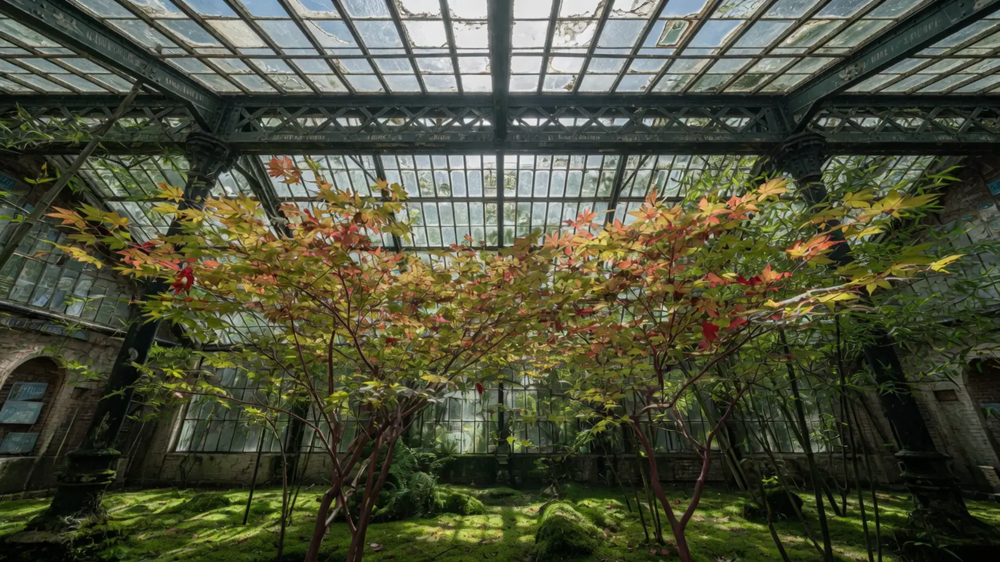
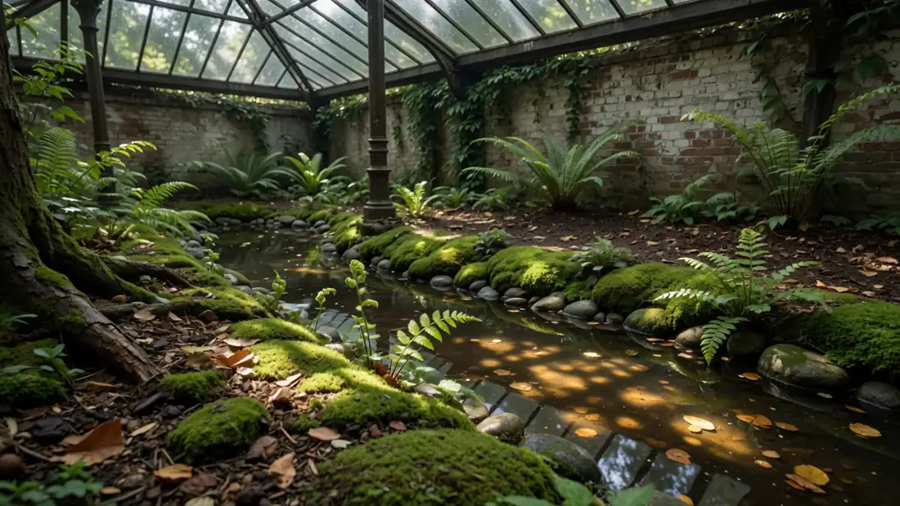
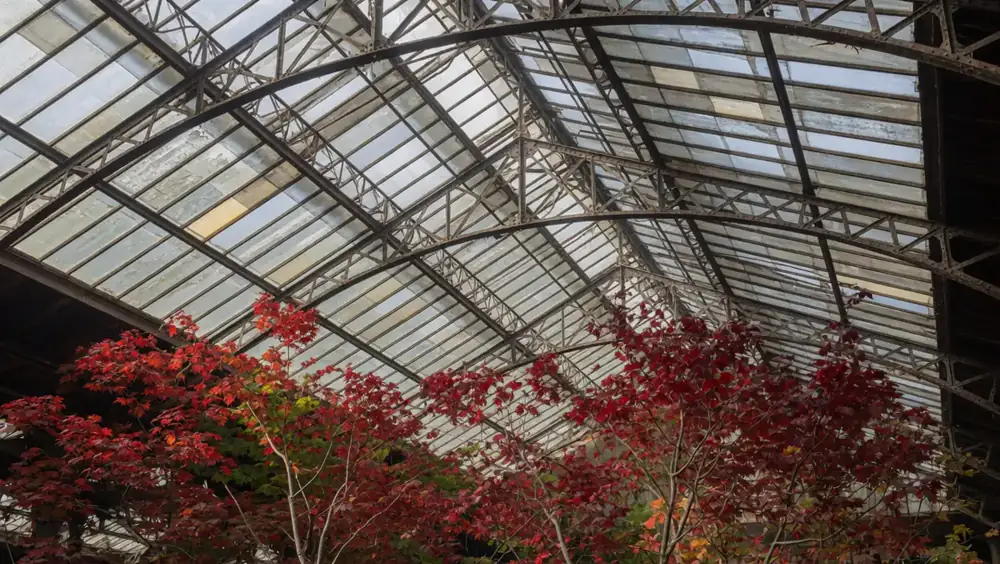
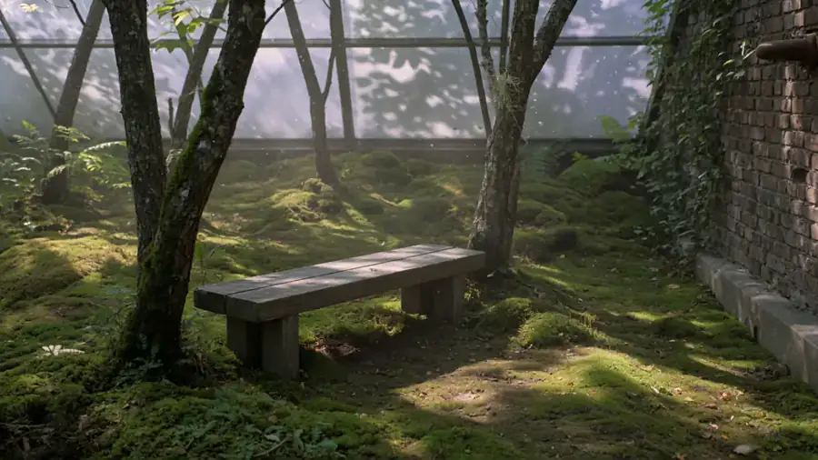
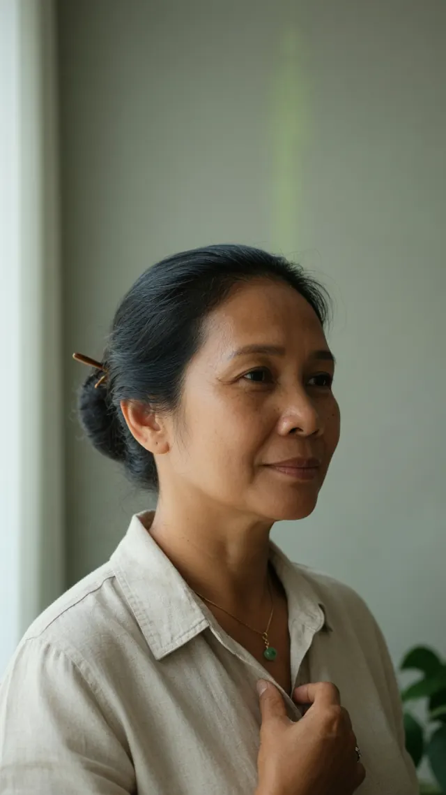
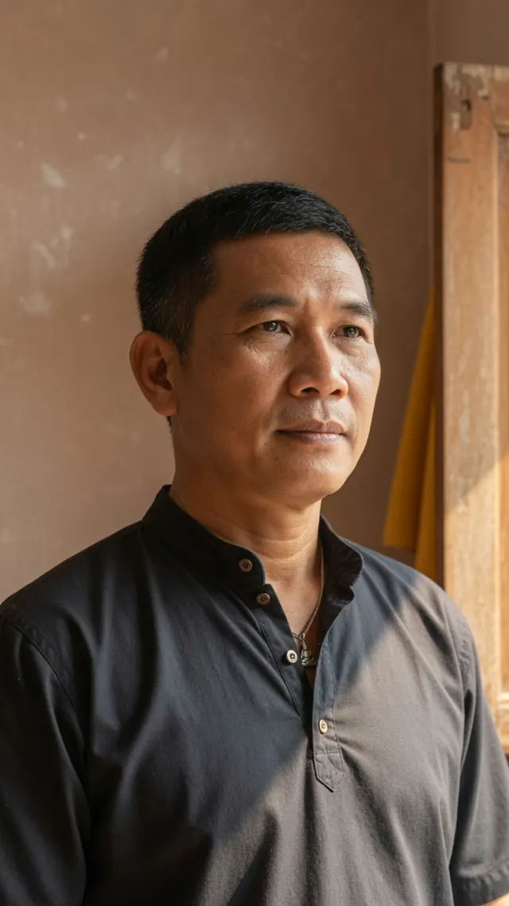

Parcours Clairière + soin 90 min
175 €
Offre d’entrée : un soin de 90 min et le temps dédié dans La Clairière.
Demander ce parcoursProjet fictif — démonstration Studio Brontès. Établissement, adresse, téléphone, horaires et réservations sont inventés. Aucune demande n’est transmise.
Suan Nai · สวนใน · Paris 11ᵉ (enseigne fictive)
Suan Nai est une maison de massage thaïlandais traditionnel installée dans une ancienne imprimerie de 2 000 m². Au centre : La Clairière — 320 m² de forêt plantée en pleine terre sous verrière. On la traverse pieds nus entre deux temps de soin.
Rappel sous 4 h ouvrées (démonstration) · +33 1 43 57 20 84 (numéro fictif)

Signature

Au cœur du complexe, une forêt intérieure de 320 m² sous la verrière d’origine de l’imprimerie. Plantée en pleine terre — pas en bacs — : 38 arbres (érables du Japon, fougères arborescentes, bambous noirs, un ficus de 7 m), sol de mousse et d’écorce, ruisseau en circuit fermé, brumisation à intervalles. Température 24 °C, hygrométrie 65 %. Lumière naturelle zénithale, complétée par un éclairage qui suit la course du jour.
On la traverse pieds nus. Six alcôves de repos y sont posées. Silence demandé, aucun téléphone.


Carte
Durées et prix affichés. Thé et salon de repos inclus. Lien vers la carte complète des huit soins.
175 €
Offre d’entrée : un soin de 90 min et le temps dédié dans La Clairière.
Demander ce parcours85 € / 120 € / 155 €
Travail au sol, pressions des paumes, avant-bras et pieds le long des lignes du corps.
70 €
Zone haute du dos et ceinture scapulaire, pour les tensions liées au bureau ou au sport.
140 €
Rythme plus soutenu, jambes et dos en priorité, confort musculaire après l’effort.
Déroulement
Vous êtes reçu·e à l’entrée. On confirme le soin et la durée choisis. On vous indique vestiaire, casiers et chemin vers la cabine. Les chaussures restent au vestiaire.
Vous portez la tenue de soin fournie par la maison (pantalon large et chemise souple à manches courtes). Bijoux et montre sont déposés au casier. Vous gardez vos sous-vêtements. L’eau est disponible avant le soin.
Avec le ou la praticien·ne, vous précisez les zones à travailler ou à éviter, et le niveau de pression souhaité. Vous pouvez faire ajuster la pression à tout moment et demander d’arrêter un geste.
Le soin se déroule sur futon au sol ou sur table selon la technique. Le corps reste drapé : seules les zones travaillées sont découvertes, puis recouvertes. Le Nuad Boran se pratique habillé, dans la tenue fournie. Huiles et pochons s’appliquent selon le soin réservé.
Après le soin, temps au salon de thé : infusion servie, eau, repos assis. Vous vous rhabillez au vestiaire. Sur le Parcours Clairière, la traversée pieds nus de la forêt intérieure s’insère entre l’accueil et le soin, ou entre le soin et le thé, selon le créneau.
Thé et salon de repos sont inclus dans tout soin.
Lieu
Trois niveaux dans une ancienne imprimerie du 11ᵉ arrondissement : pierre, acier, verre d’origine. Rez-de-chaussée : accueil, vestiaires, salon de thé et accès à La Clairière. Niveaux supérieurs : cabines de soin, lumière stable, circulation calme. Ouverte en 2021.
Équipe

Fondatrice · 19 ans de pratique
Formée à l’école de médecine traditionnelle du Wat Pho, Bangkok. Elle a conçu l’organisation des soins et le lien entre cabines et Clairière à l’ouverture de 2021.

Direction des soins · 22 ans de pratique
Spécialiste du Nuad Boran. Supervise les protocoles, la montée en compétence des 24 praticiens et la cohérence des pressions et drapages.
L’équipe : 24 praticiens, tous formés au Wat Pho (Bangkok) ou à l’ITM de Chiang Mai.
Profils, parcours et diplômes fictifs, créés pour cette démonstration. Aucun agrément ni partenariat réel avec ces écoles.
Preuves
Accès
Adresse, horaires et téléphone ci-dessous sont illustratifs. Ils ne correspondent à aucun établissement réel. Ne pas s’y rendre pour un soin.